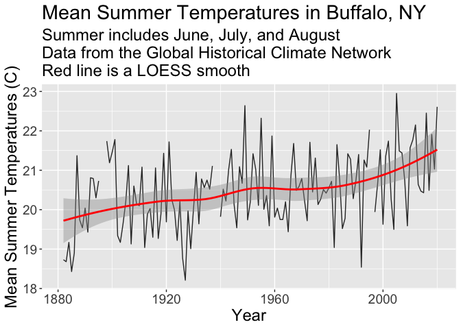

You are at a family gathering at Niagara Falls and your grandfather, who lives nearby, claims that summer temperatures are colder now than they were when he was a kid in the 1920s. Your inner data scientist thinks this is unlikely but you decide to look into it.
You will use the NASA GISS temperature record for the Buffalo Niagara Airport available from this website. Later we’ll learn how to use APIs to interact with online databases, but for now we’ll work with a simple csv file.
If you explore the NASA GISS website for a station (Buffalo, NY website), you’ll find they provide a link to download the data directly as a comma-separated-values (CSV) file. CSV files are simple text files with commas in between the values. They are a common format for storing and sharing relatively small tabular datasets because they are so simple that many different software can open them, from Excel to ArcGIS.
library(tidyverse)
# define the link to the data - you can try this in your browser too. Note that the URL ends in .csv.
dataurl="https://data.giss.nasa.gov/tmp/gistemp/STATIONS/tmp_USW00014733_14_0_1/station.csv"This url points to a CSV file with monthly mean temperatures from the GISS dataset. You can check out the file here. Now use read_csv() to download and import the CSV file directly from the website (cool, huh!?).
temp=read_csv(dataurl,
skip=1, #skip the first line which has column names
na="999.90", # tell R that 999.90 means missing in this dataset
col_names = c("YEAR","JAN","FEB","MAR", # define column names
"APR","MAY","JUN","JUL",
"AUG","SEP","OCT","NOV",
"DEC","DJF","MAM","JJA",
"SON","metANN"))
# renaming is necessary becuase they used dashes ("-")
# in the column names and R doesn't like that.If the command above gives you an error, open the page in the browser and update the dataurl link to download the csv.
Now use your tools to explore the dataset. You can try View(temp) to open the table in a browsable ‘excel-like’ window. Or summary(temp) to get summaries of each column. Or glimpse(temp).
You want to make a nice graphic to show your grandfather at your next family gathering. Be sure to include informative axis labels, a graph title, a graph subtitle describing the source of the data, the raw data, and a smoothed line showing the overal trend through time.
It should look something like this:

JJA) using ggplotgeom_smooth()xlab() and ylab() including unitsggtitle()png() and dev.off() OR ggsaveWhat do you tell your grandfather?
If you have extra time, use the station selector to find the links to download additional stations and make additional plots. You could even merge different stations into the same table and plot them together.
Can you think of other plots to consider? Perhaps aggregating to mean temperature by decade?